Degree and Rank
Rotation per condition
m.DegreeRank.data <- time_series_data %>%
filter(State != 'mixed', SignalingType != 'A') %>%
mutate(SignalingType = factor(SignalingType, levels = c('NP', 'VP', 'FP'))) %>%
select(Participant, SignalingType, ResourceSpeed, State, PlayerRank, InDegree, OutDegree, IsGoodSocialInfoAvailable)m.DegreeRank.data %>%
filter(State == 'tracking') %>%
group_by(ResourceSpeed, State, SignalingType, PlayerRank) %>%
summarise(m = mean(InDegree), se = sd(InDegree)/sqrt(n())) %>%
ggplot(aes(x = PlayerRank, y = m, fill=SignalingType, color=SignalingType)) +
# geom_boxplot() +
geom_point(position=position_dodge(width=0.3)) +
geom_errorbar(aes(x=PlayerRank,ymin=m-se, ymax=m+se), position=position_dodge(width=0.3)) +
facet_grid(cols=vars(ResourceSpeed), rows=vars(State)) +
# facet_wrap(vars(ResourceSpeed, State), ncol=2, scales = "free_y") +
theme_nice() +
labs(y = "Avg. in-degree", x = "Rank of the players (by distance) in the group")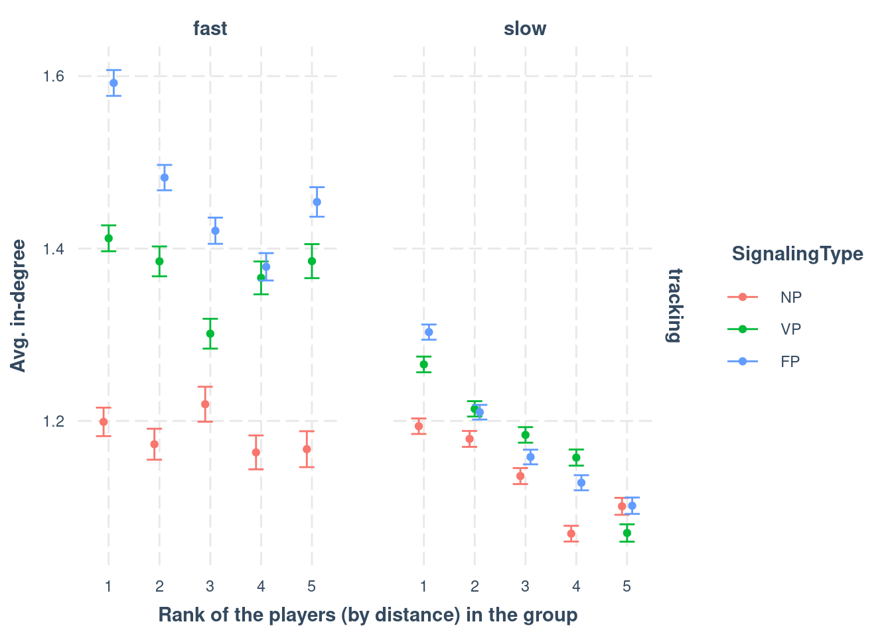
m.DegreeRank.data %>%
filter(State == 'tracking') %>%
group_by(ResourceSpeed, State, SignalingType, PlayerRank) %>%
summarise(m = mean(OutDegree), se = sd(OutDegree)/sqrt(n())) %>%
ggplot(aes(x = PlayerRank, y = m, fill=SignalingType, color=SignalingType)) +
# geom_boxplot() +
geom_point(position=position_dodge(width=0.3)) +
geom_errorbar(aes(x=PlayerRank,ymin=m-se, ymax=m+se), position=position_dodge(width=0.3)) +
facet_grid(cols=vars(ResourceSpeed), rows=vars(State)) +
theme_nice() +
labs(y = "Avg. out-degree", x = "Rank of the players (by distance) in the group")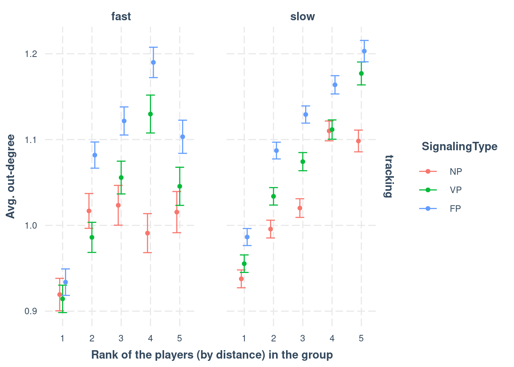
m.DegreeRank.data %>%
filter(State == 'searching') %>%
filter((IsGoodSocialInfoAvailable == 1) & (PlayerRank != 1)) %>%
group_by(ResourceSpeed, State, SignalingType, PlayerRank) %>%
summarise(m = mean(OutDegree), se = sd(OutDegree)/sqrt(n())) %>%
ggplot(aes(x = PlayerRank, y = m, fill=SignalingType, color=SignalingType)) +
# geom_boxplot() +
geom_point(position=position_dodge(width=0.3)) +
geom_errorbar(aes(x=PlayerRank,ymin=m-se, ymax=m+se), position=position_dodge(width=0.3)) +
facet_grid(cols=vars(ResourceSpeed), rows=vars(State)) +
theme_nice() +
labs(y = "Avg. out-degree", x = "Rank of the players (by distance) in the group")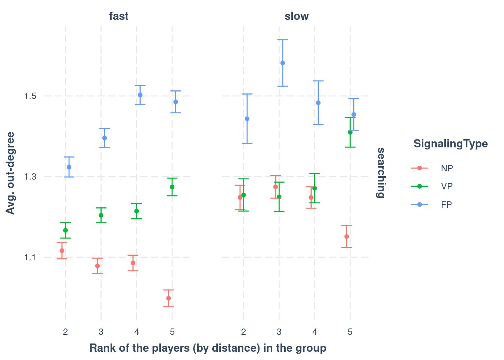
Model In-Degree
m.DegreeRank.Indegree.data <- m.DegreeRank.data %>% filter(State == 'tracking')
m.DegreeRank.Indegree.formula <- brmsformula(
InDegree ~ PlayerRank * ResourceSpeed * SignalingType + (1 | Participant),
family = poisson()
)
m.DegreeRank.Indegree.formula_comparison <- brmsformula(
InDegree ~ PlayerRank * ResourceSpeed * SignalingType,
family = poisson()
)
m.DegreeRank.Indegree.priors <- c(
prior(normal(0, 1), class = b),
prior(normal(0, 1), class = Intercept),
prior(normal(0, 0.1), class = sd, lb = 0)
)Model fitting
m.DegreeRank.Indegree.fit <- brm(
formula = m.DegreeRank.Indegree.formula,
data = m.DegreeRank.Indegree.data,
prior = m.DegreeRank.Indegree.priors,
chains = 4,
cores = 4,
seed = 42,
warmup = 500,
iter = 2000,
file = paste0(fits_path, 'in_degree_rank.rds'),
backend = "cmdstanr",
threads = threading(100),
control = list(adapt_delta = 0.95),
save_pars = save_pars(all = TRUE))## Family: poisson
## Links: mu = log
## Formula: InDegree ~ PlayerRank * ResourceSpeed * SignalingType + (1 | Participant)
## Data: m.DegreeRank.Indegree.data (Number of observations: 226947)
## Draws: 4 chains, each with iter = 2000; warmup = 500; thin = 1;
## total post-warmup draws = 6000
##
## Multilevel Hyperparameters:
## ~Participant (Number of levels: 477)
## Estimate Est.Error l-95% CI u-95% CI Rhat Bulk_ESS Tail_ESS
## sd(Intercept) 0.16 0.01 0.15 0.18 1.01 830 1610
##
## Regression Coefficients:
## Estimate Est.Error l-95% CI u-95% CI Rhat Bulk_ESS Tail_ESS
## Intercept 0.17 0.03 0.11 0.22 1.00 974 2043
## PlayerRank2 -0.01 0.03 -0.06 0.04 1.00 1113 2540
## PlayerRank3 0.02 0.03 -0.03 0.07 1.00 1135 2444
## PlayerRank4 0.00 0.03 -0.05 0.06 1.00 1159 2770
## PlayerRank5 -0.01 0.03 -0.07 0.04 1.00 1233 2420
## ResourceSpeedslow -0.01 0.03 -0.07 0.06 1.00 832 1489
## SignalingTypeVP 0.16 0.03 0.09 0.23 1.00 856 1912
## SignalingTypeFP 0.27 0.03 0.20 0.34 1.00 857 1616
## PlayerRank2:ResourceSpeedslow 0.00 0.03 -0.05 0.06 1.00 1131 2355
## PlayerRank3:ResourceSpeedslow -0.06 0.03 -0.12 -0.01 1.00 1149 2371
## PlayerRank4:ResourceSpeedslow -0.10 0.03 -0.16 -0.04 1.00 1144 2779
## PlayerRank5:ResourceSpeedslow -0.07 0.03 -0.13 -0.01 1.00 1213 2302
## PlayerRank2:SignalingTypeVP -0.01 0.03 -0.07 0.05 1.00 1239 2729
## PlayerRank3:SignalingTypeVP -0.10 0.03 -0.16 -0.03 1.00 1177 2517
## PlayerRank4:SignalingTypeVP -0.05 0.03 -0.12 0.02 1.00 1342 3099
## PlayerRank5:SignalingTypeVP -0.04 0.03 -0.11 0.03 1.00 1361 3034
## PlayerRank2:SignalingTypeFP -0.02 0.03 -0.08 0.03 1.00 1175 2767
## PlayerRank3:SignalingTypeFP -0.11 0.03 -0.17 -0.05 1.00 1313 2503
## PlayerRank4:SignalingTypeFP -0.14 0.03 -0.20 -0.08 1.00 1367 2968
## PlayerRank5:SignalingTypeFP -0.07 0.03 -0.13 -0.01 1.00 1388 2756
## ResourceSpeedslow:SignalingTypeVP -0.10 0.05 -0.19 -0.01 1.00 603 1503
## ResourceSpeedslow:SignalingTypeFP -0.18 0.04 -0.27 -0.09 1.00 718 1478
## PlayerRank2:ResourceSpeedslow:SignalingTypeVP -0.02 0.04 -0.09 0.05 1.00 1296 2279
## PlayerRank3:ResourceSpeedslow:SignalingTypeVP 0.09 0.04 0.01 0.16 1.00 1310 3122
## PlayerRank4:ResourceSpeedslow:SignalingTypeVP 0.07 0.04 -0.01 0.15 1.00 1343 2941
## PlayerRank5:ResourceSpeedslow:SignalingTypeVP -0.04 0.04 -0.12 0.03 1.00 1353 2904
## PlayerRank2:ResourceSpeedslow:SignalingTypeFP -0.03 0.03 -0.09 0.04 1.00 1259 2533
## PlayerRank3:ResourceSpeedslow:SignalingTypeFP 0.05 0.04 -0.02 0.11 1.00 1376 2862
## PlayerRank4:ResourceSpeedslow:SignalingTypeFP 0.10 0.04 0.03 0.17 1.00 1346 2946
## PlayerRank5:ResourceSpeedslow:SignalingTypeFP -0.03 0.04 -0.10 0.04 1.00 1395 3306
##
## Draws were sampled using sample(hmc). For each parameter, Bulk_ESS
## and Tail_ESS are effective sample size measures, and Rhat is the potential
## scale reduction factor on split chains (at convergence, Rhat = 1).Model diagnostics
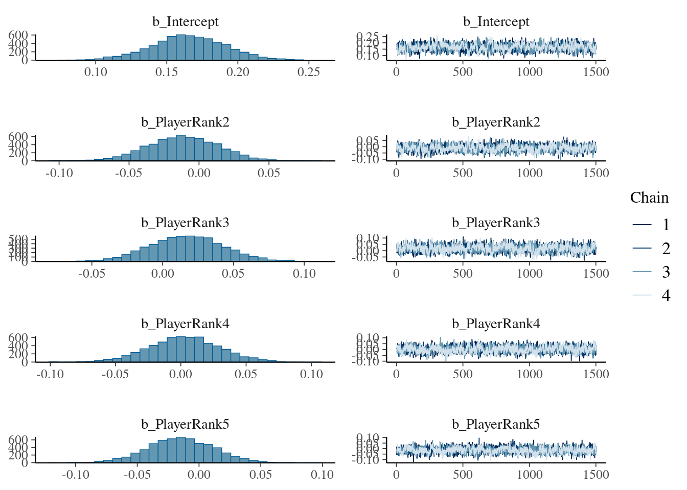
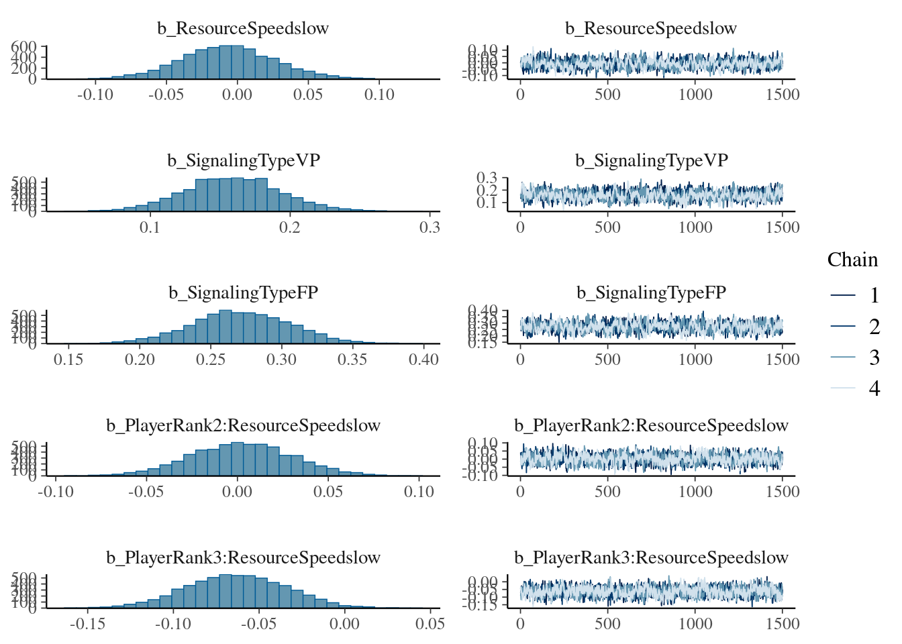
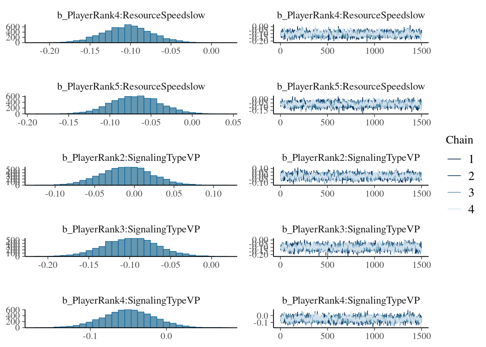
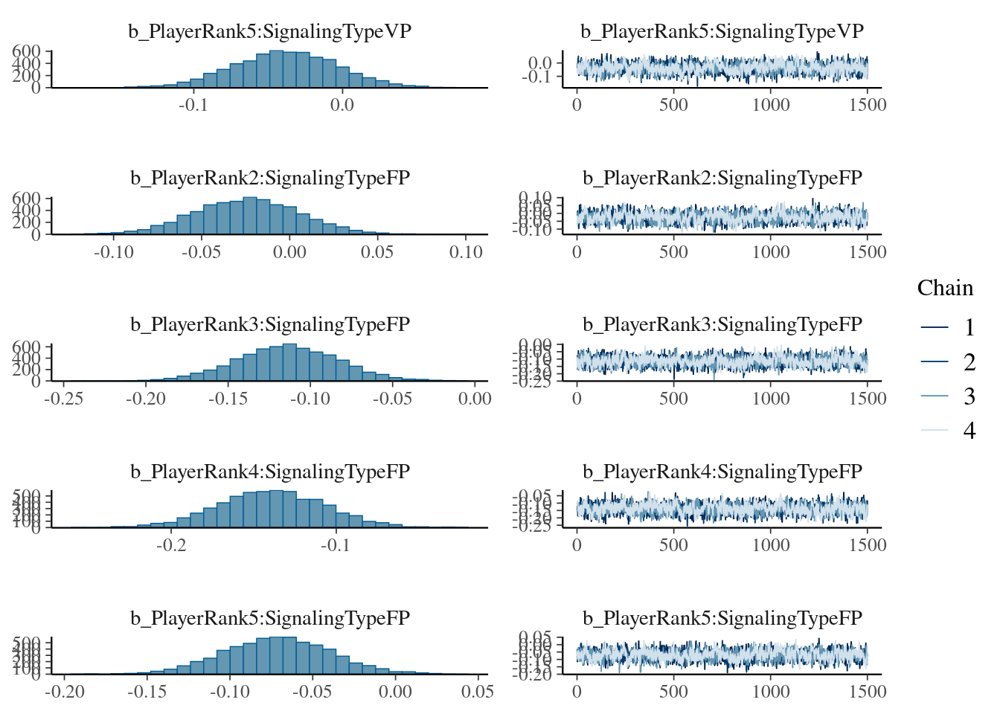
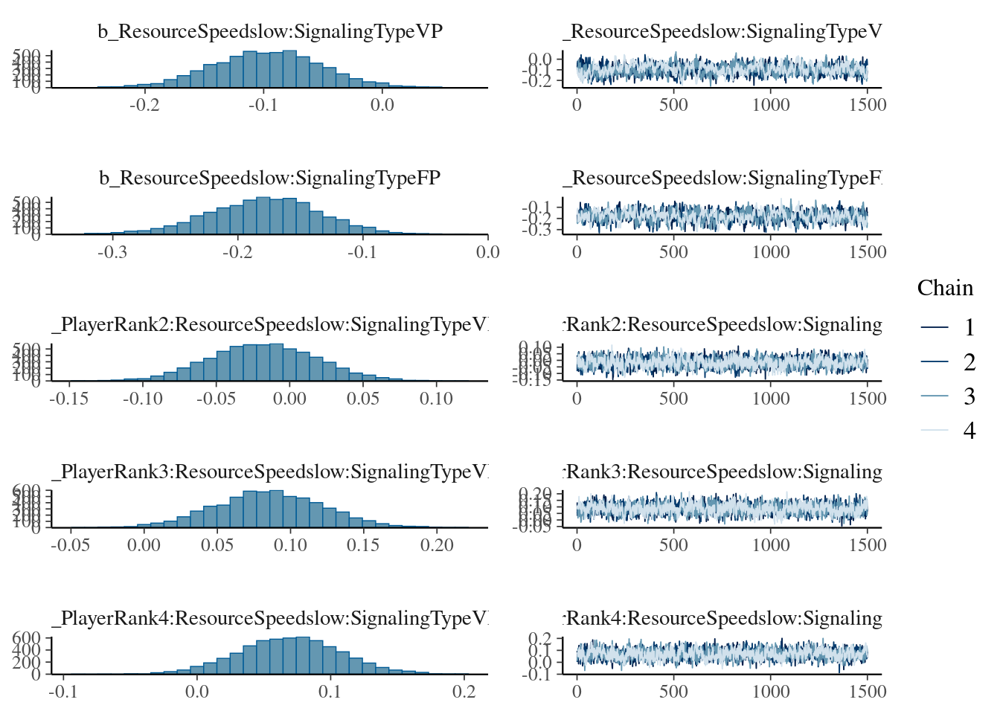
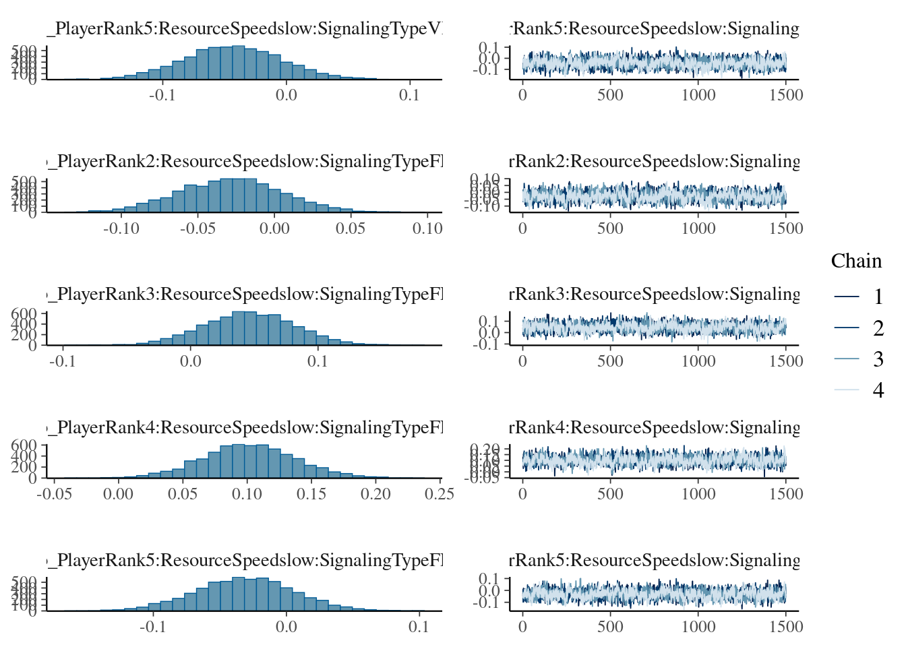
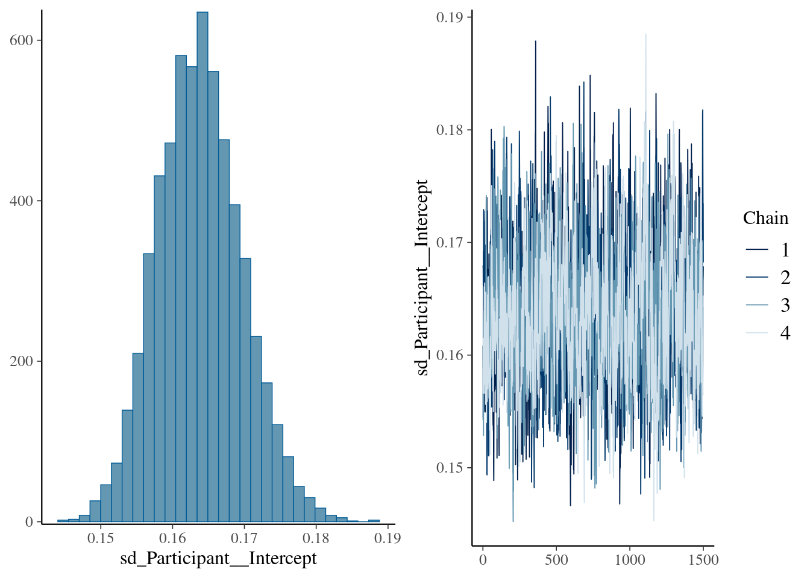
Figure
in_degree_rank_fig <- m.DegreeRank.Indegree.data %>%
data_grid(PlayerRank, ResourceSpeed, SignalingType) %>%
tidybayes::add_epred_draws(m.DegreeRank.Indegree.fit,
allow_new_levels = TRUE,
re_formula = m.DegreeRank.Indegree.formula_comparison) %>%
ggplot(aes(x = PlayerRank,
y = .epred,
color = SignalingType,
fill = SignalingType,
shape = ResourceSpeed)) +
ggdist::stat_pointinterval(
position = position_dodge(width = .5),
point_interval = "mean_qi",
.width = 0.9, # c(0.5, 0.9),
point_size = 3.6,
) +
scale_color_manual(values = c("#DF536B", "#61D04F", "#2297E6"), guide = guide_legend(title = "Payoff Condition")) +
scale_fill_manual(values = c("#DF536B", "#61D04F", "#2297E6"), guide = guide_legend(title = "Payoff Condition")) +
scale_shape_manual(values = c(21, 24), guide = guide_legend(title = "Resource")) +
facet_grid(cols=vars(ResourceSpeed)) +
theme_clean() +
panel_border() +
theme(legend.position = "none") +
labs(x = 'Rank by Distance to Resource Center (1=Closest, 5=Furthest)', # '',
y = 'In Degree')
in_degree_rank_fig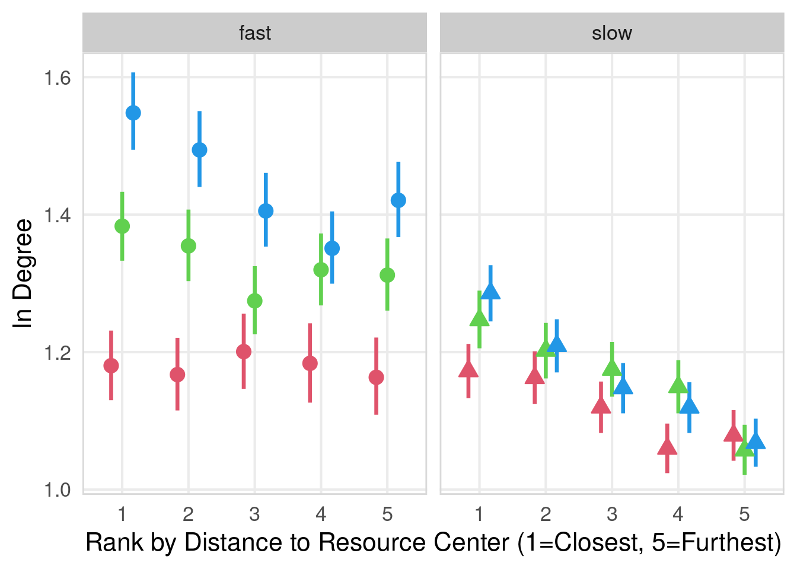
Model Out-Degree
m.DegreeRank.Outdegree.data <- m.DegreeRank.data %>% filter(State == 'tracking')
m.DegreeRank.Outdegree.formula <- brmsformula(
OutDegree ~ PlayerRank * ResourceSpeed * SignalingType + (1 | Participant),
family = poisson()
)
m.DegreeRank.Outdegree.formula_comparison <- brmsformula(
OutDegree ~ PlayerRank * ResourceSpeed * SignalingType,
family = poisson()
)
m.DegreeRank.Outdegree.priors <- c(
prior(normal(0, 1), class = b),
prior(normal(0, 1), class = Intercept),
prior(normal(0, 0.1), class = sd, lb = 0)
)Model fitting
m.DegreeRank.Outdegree.fit <- brm(
formula = m.DegreeRank.Outdegree.formula,
data = m.DegreeRank.Outdegree.data,
prior = m.DegreeRank.Outdegree.priors,
chains = 4,
cores = 4,
seed = 42,
warmup = 500,
iter = 2000,
file = paste0(fits_path, 'out_degree_rank.rds'),
backend = "cmdstanr",
threads = threading(100),
control = list(adapt_delta = 0.95),
save_pars = save_pars(all = TRUE))## Family: poisson
## Links: mu = log
## Formula: OutDegree ~ PlayerRank * ResourceSpeed * SignalingType + (1 | Participant)
## Data: m.DegreeRank.Outdegree.data (Number of observations: 226947)
## Draws: 4 chains, each with iter = 2000; warmup = 500; thin = 1;
## total post-warmup draws = 6000
##
## Multilevel Hyperparameters:
## ~Participant (Number of levels: 477)
## Estimate Est.Error l-95% CI u-95% CI Rhat Bulk_ESS Tail_ESS
## sd(Intercept) 0.21 0.01 0.19 0.22 1.00 953 1523
##
## Regression Coefficients:
## Estimate Est.Error l-95% CI u-95% CI Rhat Bulk_ESS Tail_ESS
## Intercept -0.09 0.03 -0.16 -0.04 1.00 1108 1954
## PlayerRank2 0.10 0.03 0.05 0.15 1.00 1622 3033
## PlayerRank3 0.11 0.03 0.05 0.17 1.01 1532 3129
## PlayerRank4 0.08 0.03 0.02 0.13 1.00 1550 3349
## PlayerRank5 0.12 0.03 0.07 0.18 1.00 1634 3039
## ResourceSpeedslow 0.04 0.04 -0.04 0.12 1.01 664 1326
## SignalingTypeVP 0.02 0.04 -0.06 0.10 1.00 1052 1905
## SignalingTypeFP 0.03 0.04 -0.05 0.11 1.00 1037 1767
## PlayerRank2:ResourceSpeedslow -0.05 0.03 -0.11 0.01 1.00 1595 2915
## PlayerRank3:ResourceSpeedslow -0.03 0.03 -0.09 0.03 1.01 1513 3107
## PlayerRank4:ResourceSpeedslow 0.07 0.03 0.00 0.13 1.00 1571 3129
## PlayerRank5:ResourceSpeedslow 0.03 0.03 -0.03 0.09 1.00 1645 3060
## PlayerRank2:SignalingTypeVP -0.03 0.04 -0.09 0.04 1.00 1841 3448
## PlayerRank3:SignalingTypeVP 0.02 0.04 -0.05 0.10 1.00 1737 3263
## PlayerRank4:SignalingTypeVP 0.13 0.04 0.06 0.21 1.00 1770 3714
## PlayerRank5:SignalingTypeVP 0.00 0.04 -0.07 0.07 1.00 2082 3586
## PlayerRank2:SignalingTypeFP -0.00 0.03 -0.07 0.06 1.00 1805 3474
## PlayerRank3:SignalingTypeFP 0.05 0.04 -0.02 0.12 1.00 1759 3121
## PlayerRank4:SignalingTypeFP 0.16 0.04 0.09 0.23 1.00 1812 2739
## PlayerRank5:SignalingTypeFP 0.04 0.03 -0.03 0.10 1.00 1906 3177
## ResourceSpeedslow:SignalingTypeVP -0.01 0.06 -0.12 0.10 1.00 666 1349
## ResourceSpeedslow:SignalingTypeFP 0.00 0.05 -0.11 0.11 1.01 679 1313
## PlayerRank2:ResourceSpeedslow:SignalingTypeVP 0.04 0.04 -0.03 0.12 1.00 1825 3483
## PlayerRank3:ResourceSpeedslow:SignalingTypeVP 0.00 0.04 -0.08 0.08 1.01 1699 3014
## PlayerRank4:ResourceSpeedslow:SignalingTypeVP -0.14 0.04 -0.22 -0.05 1.00 1653 3259
## PlayerRank5:ResourceSpeedslow:SignalingTypeVP 0.04 0.04 -0.04 0.12 1.00 1993 3380
## PlayerRank2:ResourceSpeedslow:SignalingTypeFP 0.03 0.04 -0.04 0.11 1.00 1792 3162
## PlayerRank3:ResourceSpeedslow:SignalingTypeFP -0.00 0.04 -0.08 0.08 1.00 1723 2908
## PlayerRank4:ResourceSpeedslow:SignalingTypeFP -0.15 0.04 -0.22 -0.07 1.00 1743 3096
## PlayerRank5:ResourceSpeedslow:SignalingTypeFP 0.00 0.04 -0.07 0.08 1.00 1929 3188
##
## Draws were sampled using sample(hmc). For each parameter, Bulk_ESS
## and Tail_ESS are effective sample size measures, and Rhat is the potential
## scale reduction factor on split chains (at convergence, Rhat = 1).